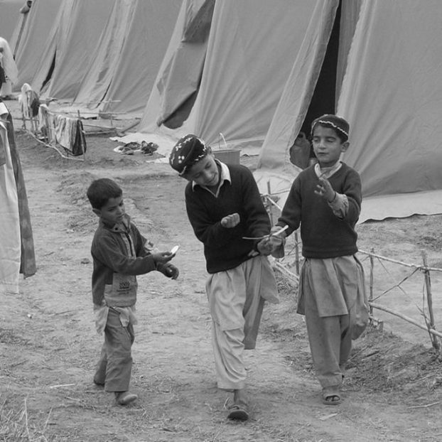
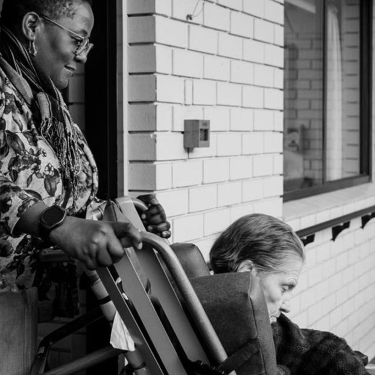

Can you think of any groups of people who typically have a lot of choices? Which groups can you think of that have few choices?
Power in society
Consider each person on the following cards. Does this person have power? Select each of the cards to flip and reveal the answer.
Politician
|
Yes, politicians make decisions that affect the lives of other people every day. |

Refugee child
|
No, other people are in control of many parts of a child’s life. |
Police officer
|
Yes, police officers are responsible for ensuring that people follow the law. |

Support worker
|
Yes, support workers have a lot of power and they need to be aware of how to use it responsibly. |